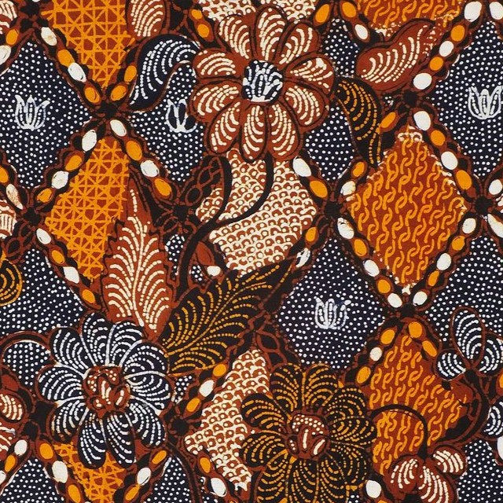

Batik Indonesia.
Warisan Budaya.
Identitas Bangsa.
Batik bukan sekadar kain bermotif. Ia adalah cerita, filosofi, dan jati diri bangsa Indonesia yang diakui dunia. Setiap goresan canting membawa makna mendalam, menghubungkan masa lalu dengan masa kini.




Perjalanan Batik
Abad 12-15
Era Majapahit
Batik mulai dikenal di kalangan kerajaan sebagai simbol status sosial
2 Oktober 2009
Pengakuan UNESCO
Batik Indonesia diakui sebagai Warisan Kemanusiaan untuk Budaya Lisan dan Nonbendawi
Era Modern
Batik Mendunia
Batik menjadi fashion global dan kebanggaan Indonesia di mata dunia
Galeri Batik
Lihat Galeri
Lihat Galeri
Lihat Galeri
Lihat Galeri
Lihat Galeri
Lihat Galeri
Jelajahi Batik Indonesia
Tentang Batik
Mengenal sejarah, filosofi, dan makna mendalam batik Indonesia
Pelajari →Ragam Motif
Koleksi lengkap motif batik dari berbagai daerah Nusantara
Lihat Koleksi →Sejarah
Perjalanan batik dari era kerajaan hingga pengakuan UNESCO
Baca Selengkapnya →